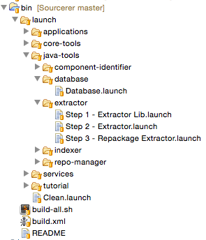

This tutorial is designed to show how to download, compile, install, and use the Sourcerer infrastructure to build a database of Open Source Software. It is designed to be run using Eclipse. The requirements for this tutorial are:
Start by clonning the Sourcerer repository:
[sourcerer-path]$ git clone https://github.com/Mondego/Sourcerer.git
where [sourcerer-path] is the directory where you cloned Sourcerer.
Start by installing the Plug-in Development Environment (PDE) for Eclipse (here). The simplest way to do this is to, inside Eclipse, go to Help → Eclipse Marketplace and search for "pde".
Next, inside Eclipse, go to File → Import → General → Existing Projects into Workspace. Press Next and under Select root directory (first option) browse to [sourcerer-path]. A group of projects should appear. Make sure they are all selected, and press Finish.
Wait a few seconds for Eclipse to build the workspace, and then you should see a list of projects (if you do not see anything, go to Window → Show View → Project Explorer).
Do not worry, for now, with possible problems Eclipse allert you about when importing the projects. We will fix them later.
You will need to create three folders in your computer, as seen below:
~$ mkdir crawled-projects ~$ mkdir extracted-projects ~$ mkdir db-import-output
We created these folders in the home directory. This means, for example, that the folder crawled-projects is accessed by typing cd ~/crawled-projects/. We will follow this path, but there is no restriction where you create these folders, just be sure to adjust this tutorial accordingly.
The folder ~/crawled-projects/ should contain Java projects. To start, you can download our test repository (above) and move the contents to this folder.
Follow the instructions here to set-up mysql and create a database. Create a user for the database and give it writing permissions. Save the DATABASE-URL (for ex.: localhost if the server is running in your machine), DATABASE-NAME, the DATABASE-USER and DATABASE-PASSWORD.
From all the projects you can see in Eclipse, the most important is bin. In this project, inside the only existing folder, launch, you have the projects split in four groups. Open the folders so that your environment looks exactly like this figure:
The launch files under database and extractor are the only ones you need to build. This is easily done by Right Click on *.launch → Run As → [launcher-name]. For the extractor, you will need to run them in the order they appear.
You can track the process with the Console window on Eclipse ( Window → Show View → Console).
Now, go to the extractor project, and Right Click → Refresh. The path errors this project had should now disappear.
Sometimes running a process on Eclipse that uses PDE is tricky, because even though the process has not finished yet, Eclipse might tell you so. This is a non-solved bug (check here). If, for example, you are trying to run Step 3 but you can not, it might be because Step 2 has not finished yet, even though Eclipse is telling you so. Just wait a few seconds after each step and everything should run smoothly.
Under the project bin you find launch files to build all the tools in the Sourcerer infrastructure. They are as easy to build as the ones we just showed. Give it a try!